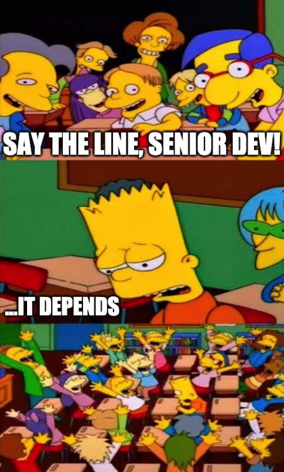
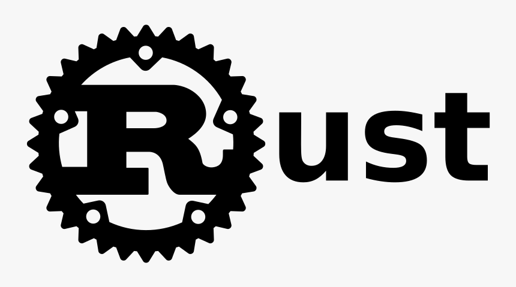
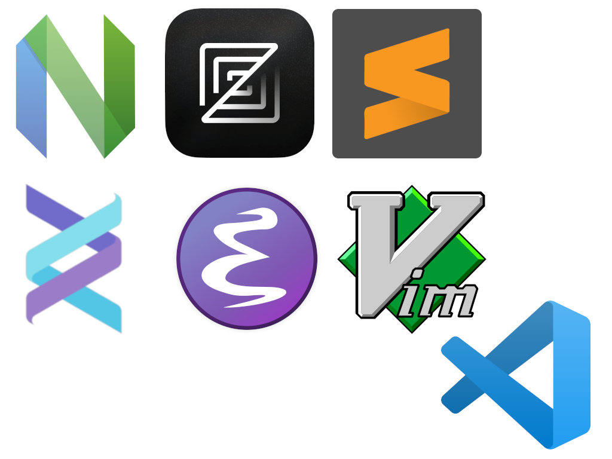
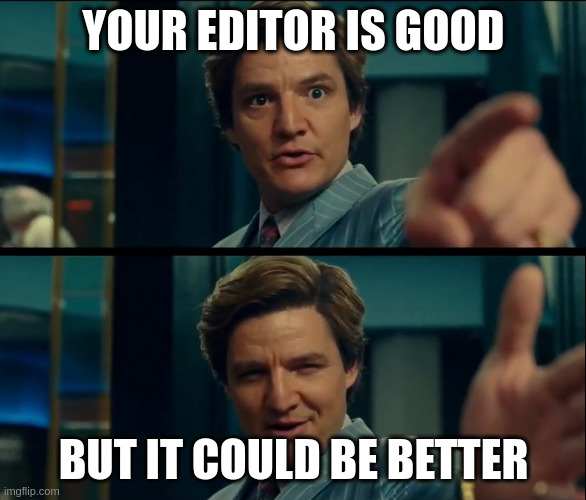
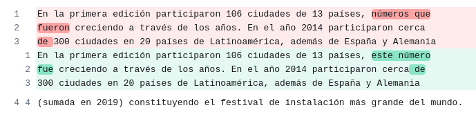

Antes de empezar...
Navega usando
Documenta tu proyecto
con herramientas open source
Santos Gallegos
-
stsewd@proton.me
@stsewd
$ WHOAMI

Escogiendo tus herramientas

Generador de documentación
Genera documentación a partir de una fuente.
- MkDocs
- Sphinx
- Doxygen
- Asciidoctor
- Docusaurus
Formato de la documentación
El formato en el que está escrita la fuente de la documentación.
- Markdown
- reStructuredText
- AsciiDoc
- HTML
Escogiendo tus herramientas
Escogiendo tus herramientas

Escogiendo tus herramientas
- Ecosistema/lenguaje
- Necesidades
- Tamaño de tu proyecto
Ejemplo: Rust

https://doc.rust-lang.org/rustdoc/
Ejemplo: Python

Ejemplo: CLI
$ man man-pages
$ man groff
Ejemplo: API
https://www.openapis.org/
Formato

Markdown
Markdown
# Título
Texto *cursivo*, **negrita** y ~~tachado~~.
[Enlace](https://example.com).
## Subtítulo
- Lista 1
- Lista 2

```python
print("Hola mundo")
```
https://commonmark.org/
Markdown

reStructuredText
Título
======
Texto *cursivo*, **negrita**.
`Enlace <https://example.com>`__.
Subtítulo
---------
- Lista 1
- Lista 2
.. image:: https://example.com/image.png
.. code:: python
print("Hola mundo")
https://docutils.sourceforge.io/rst.html
Generadores y formatos
-
MkDocs: Markdown
-
Sphinx: reStructuredText, Markdown, MyST
-
Jupyter Book: MyST
Escribiendo documentación
Teclado

Editor

Editor

LSP
Language server protocol
- Autocompletado
- Errores
- Documentación (hover)
- Go to definition
- Refactoring
Tree-sitter
Syntax highlighting
-
Resaltado más preciso (y rápido)
-
Resaltado basado en scopes y contexto
-
Injections (resaltado de bloques de código)
tree-sitter
Demo: Neovim, BTW
Editor
Otras recomendaciones
- Checker de ortografía/gramática
- Diccionario
- Corrector de estilo (https://vale.sh/)
- AI como GH copilot, or ChatGPT
Line breaks arbitrarios

Ejemplo de bloque de código
Código de ejemplo
print("Hola mundo")
Table
| Fila 1, columna 1 |
Fila 1, columna 2 |
| Fila 2, columna 1 |
Fila 2, columna 2 |
Frase para terminar la charla
subtitulo de la frase